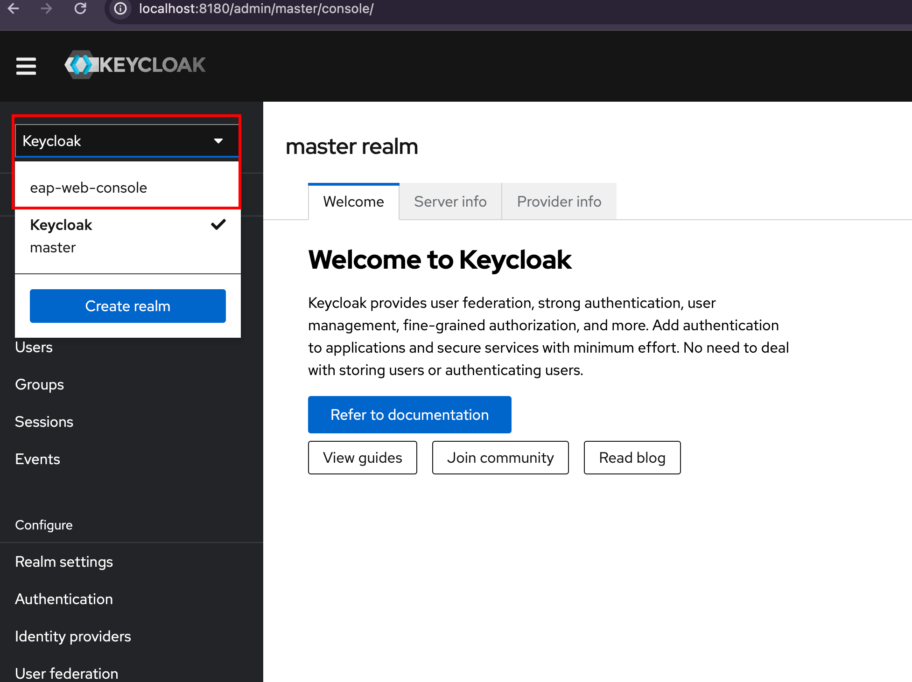
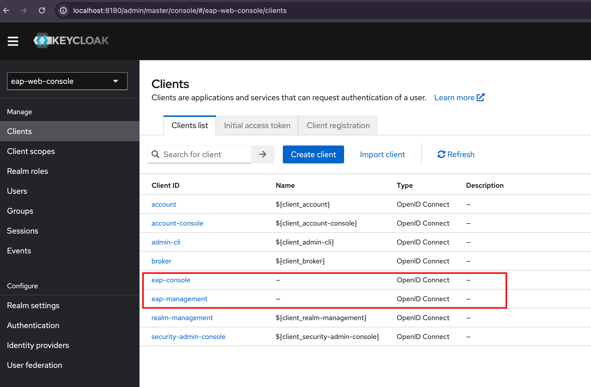
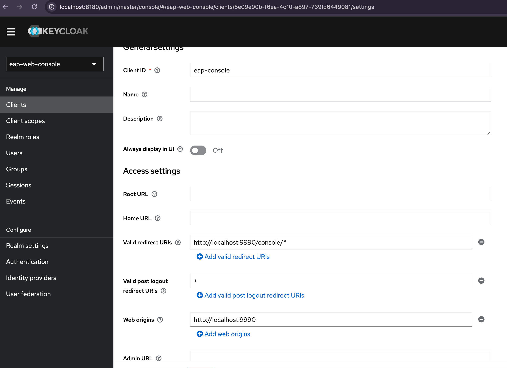
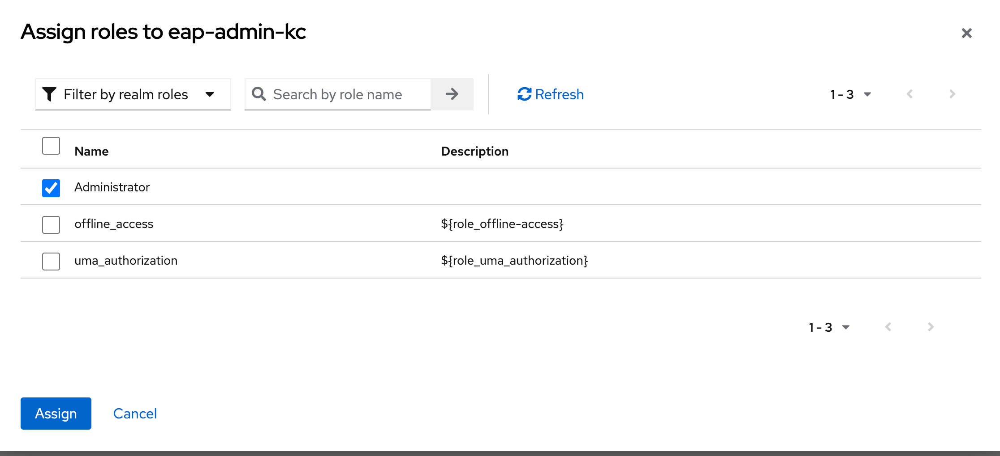
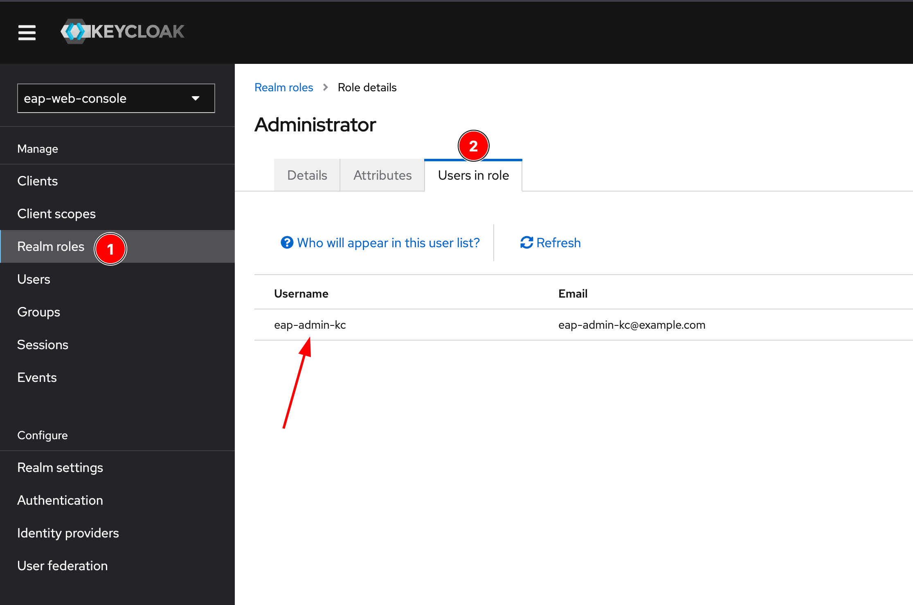
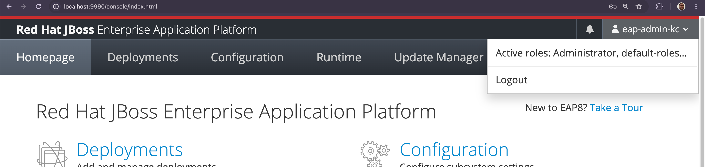

EAP Web Console Single Sign-On using OIDC
Exercise: Securing the JBoss EAP Management Console using Keycloak
Pre-requisites
-
You need a Keycloak v24.0 Single Sign-On server as the OIDC provider that manages credentials. The easiest way to run this is as a container using
podmanordockerCLI. -
Download the keycloak realm file from https://github.com/RedHatQuickCourses/eap-qc-apps/blob/main/admin2/realm.json, and copy it to a new folder in your home directory (Create a new folder in your home directory, for example
kc-realms). -
Run the Keycloak v24.0 container. Replace the
podmancommand withdockerif your operating system cannot runpodman:[jboss@eap1 ~]$ podman run -d \ --name keycloak -p 8180:8180 \ -e KEYCLOAK_ADMIN=admin \ -e KEYCLOAK_ADMIN_PASSWORD=admin \ -v /Users/rsriniva/kc-realms:/opt/keycloak/data/import \ quay.io/keycloak/keycloak:24.0 start-dev \ --http-port=8180 --import-realmThe --import-realmcommand imports a Keycloak realm into the current running Keycloak instance. This is to prevent the long and tedious process of creating a new realm from scratch. Consult the Keycloak and EAP product documentation in case you need to create a realm from scratch. -
To verify that the Keycloak DB container started successfully:
[jboss@eap1 ~]$ podman ps CONTAINER ID IMAGE COMMAND CREATED STATUS PORTS NAMES 46d7fc6981e3 quay.io/keycloak/keycloak:24.0 start-dev --http-... 13 days ago Up 10 seconds 0.0.0.0:8180->8180/tcp keycloak -
If the Keycloak container fails to start, run the
podman logs keycloakcommand to inspect the start up logs and fix any issues. -
To restart after failures and other issues, run
podman stop keycloakfollowed bypodman rm keycloak, and then run the start up command again.
Steps
-
Start JBoss EAP in standalone mode as the
jbossuser and connect to the JBoss EAP CLI locally. -
Add a new keycloak OIDC provider to the
elytron-oidc-clientsubsystem. The realm file you imported has created a new realm calledeap-web-console. Provide the details of the realm to theprovider-urlproperty.[standalone@localhost:9993 /] /subsystem=elytron-oidc-client/provider=keycloak:add(provider-url=http://localhost:8180/realms/eap-web-console) {"outcome" => "success"} -
EAP has native support for OIDC. It needs two components to function, a
secure deploymentand asecure server. The realm already has two clients that were pre-created during start up (eap-managementandeap-console). We create a new secure deployment for theeap-managementclient ID and pass it some attributes:[standalone@localhost:9993 /] /subsystem=elytron-oidc-client/secure-deployment=eap-management:add(provider=keycloak,client-id=eap-management,principal-attribute=preferred_username,bearer-only=true,ssl-required=EXTERNAL) { "outcome" => "success", "response-headers" => { "operation-requires-reload" => true, "process-state" => "reload-required" } } -
We want to map the identity stored in Keycloak to roles needed for EAP management console access. Enable role based access control (RBAC) on EAP for this mapping to work correctly:
[standalone@localhost:9993 /] /core-service=management/access=authorization:write-attribute(name=provider,value=rbac) { "outcome" => "success", "response-headers" => { "operation-requires-reload" => true, "process-state" => "reload-required" } } [standalone@localhost:9993 /] /core-service=management/access=authorization:write-attribute(name=use-identity-roles,value=true) { "outcome" => "success", "response-headers" => { "operation-requires-reload" => true, "process-state" => "reload-required" } } -
Finally, add a
secure-serverresource and reference the provider and client ID:[standalone@localhost:9993 /] /subsystem=elytron-oidc-client/secure-server=wildfly-console:add(provider=keycloak,client-id=eap-console,public-client=true) { "outcome" => "success", "response-headers" => { "operation-requires-reload" => true, "process-state" => "reload-required" } } [standalone@localhost:9993 /] :reloadThe JBoss EAP management console requires that the secure-serverresource be specifically namedwildfly-console. -
Inspect the XML changes made to the
elytron-oidc-clientin thestandalone.xmlfile.<subsystem xmlns="urn:wildfly:elytron-oidc-client:2.0"> <provider name="keycloak"> <provider-url>http://localhost:8180/realms/eap-web-console</provider-url> </provider> <secure-deployment name="eap-management"> <ssl-required>EXTERNAL</ssl-required> <principal-attribute>preferred_username</principal-attribute> <provider>keycloak</provider> <client-id>eap-management</client-id> <bearer-only>true</bearer-only> </secure-deployment> <secure-server name="wildfly-console"> <provider>keycloak</provider> <client-id>eap-console</client-id> <public-client>true</public-client> </secure-server> </subsystem> -
You need to create a new realm role called "Administrator" and enable this role for the users you create in KC. Navigate to http://localhost:8180 and log in as
adminwith a password ofadmin. -
Select the
eap-web-consolerealm in the top left sidebar manu. -
Click on
Clientsand verify that two clients exist -eap-consoleandeap-management.
-
Click on
eap-consoleand inspect the settings. Note that post authentication re-direct URL is set to the JBoss EAP management console URL (http://localhost:9990/console/*). TheWeb originsis also set to the URL of the EAP web console. -
Click on
Realm rolesand verify that anAdministratorrole exists. You will assign this role to users who should have access to the EAP web console. -
Click on
Users. During import, users cannot be imported due to security policies. ClickCreate new userto create a new user. -
Enter the following details in the
Create userpage and clickCreate.-
Email verified: Yes
-
Username: eap-admin-kc
-
Email: eap-admin-kc@example.com
-
First name: EAP
-
Last name: Admin
-
-
In the
User detailspage, click theCredentialstab, and then clickSet password. Enterredhat123as the password and setTemporaryto OFF. Finally, clickSave. -
Back in the
User detailspage, clickRole mappingtab, and then clickAssign roleand assign theAdministratorrealm role to theeap-admin-kcuser.
Click on
Realm roles > Users in roleand verify thateap-admin-kcis listed.
-
Navigate to http://localhost:9990 and verify that you can log in as user
eap-admin-kcwithredhat123as password.